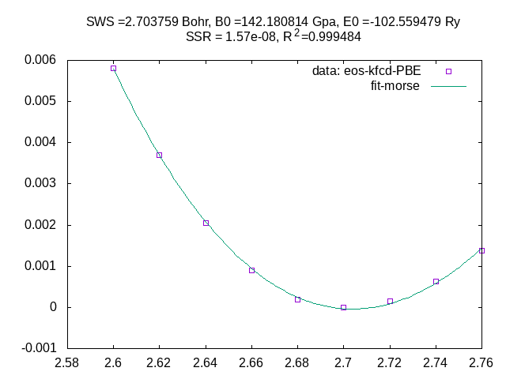

exercise/02: equilibrium volume for fcc Cu
In this exercise we will practice how to get lattice parameters for fcc copper with EMTO code. The main idea is to calculate total energy vs. different volumes, \(E(\omega)\) curve, and fit to an “Equation of State” function. Here we choose “Morse function”:
System-specific instructions
Select instructions for the system you are using:
Instructions for use on the NAISS cluster Tetralith (NSC)
Instructions for use on the EuroHPC cluster Leonardo Booster
Attention
make sure we are in the path at exercise/02
we could reuse the kstr, bmdl and shape from exercise/00
Hint
ln -vs ../00/kstr
ln -vs ../00/bmdl
ln -vs ../00/shape
base on 00/kgrn/cu.dat, change to different SWS and also the jobname and file name
Hint
for sws in `seq 2.60 0.02 2.76`
do
sed -e "s/JOBNAM=.*/JOBNAM=cu_${sws}/" \
-e "s/SWS......=......../SWS......=${sws}0000/" \
../00/kgrn/cu.dat > kgrn/cu_${sws}.dat
done
# maybe we need reduce the AMIX
# -e 's/AMIX...= 0.100/AMIX...= 0.020/' \
# soft core apprixmation is important for equilibrium volume calculation
# -e 's/SOFC.= N/SOFC.= Y/' \
base on 00/kfcd/cu.dat change to different jobnam and file name
Hint
mkdir -vp kfcd
for sws in `seq 2.60 0.02 2.76`
do
sed -e "s/JOBNAM...=.*/JOBNAM...=cu_${sws}/" \
../00/kfcd/cu.dat > kfcd/cu_${sws}.dat
done
# maybe we want to silence the output
# -e 's/MSGL..= 1/MSGL..= 0/' \
run all calculations and get \(E(\omega)\)
submit all kgrn jobs to the queue, use following sbatch script.
cd kgrn
sbatch -A naiss2024-22-241 -c 2 -a 1-9 -t 10:00 ../../emto.sbatch
cd kgrn
sbatch -A xxxx -c 2 -a 1-9 -p lrd_all_serial -t 10:00 ../../emto.sbatch
check if the kgrn jobs are finished correctly.
Hint
cd kgrn grep -L "finished" *.prn
submit all kfcd jobs to the queue, use following sbatch script.
cd kfcd
sbatch -A naiss2024-22-241 -c 1 -a 1-9 -t 10:00 ../../emto.sbatch
cd kfcd
sbatch -A xxxx -c 1 -a 1-9 -p lrd_all_serial -t 10:00 ../../emto.sbatch
get total energy vs.
SWSfrom kfcd outputHint
cd kfcd grep TOT-PBE *.prn
here we choose PBE EXC
# EXC 5th 8th cu_2.60.prn: TOT-PBE -102.553631 (Ry) -102.553631 (Ry/site) S= 2.600000 Bohr cu_2.62.prn: TOT-PBE -102.555746 (Ry) -102.555746 (Ry/site) S= 2.620000 Bohr cu_2.64.prn: TOT-PBE -102.557381 (Ry) -102.557381 (Ry/site) S= 2.640000 Bohr cu_2.66.prn: TOT-PBE -102.558531 (Ry) -102.558531 (Ry/site) S= 2.660000 Bohr cu_2.68.prn: TOT-PBE -102.559243 (Ry) -102.559243 (Ry/site) S= 2.680000 Bohr cu_2.70.prn: TOT-PBE -102.559439 (Ry) -102.559439 (Ry/site) S= 2.700000 Bohr cu_2.72.prn: TOT-PBE -102.559283 (Ry) -102.559283 (Ry/site) S= 2.720000 Bohr cu_2.74.prn: TOT-PBE -102.558814 (Ry) -102.558814 (Ry/site) S= 2.740000 Bohr cu_2.76.prn: TOT-PBE -102.558060 (Ry) -102.558060 (Ry/site) S= 2.760000 Bohr
fit the 5th and 8th for morse function

{kind=link}